Tatuadora · São José dos Campos
Coraline tattoo ✶ desenho ✶ arte
Tatueira, desenheira e arteira. Personagens de anime e games em preto e cinza, cybertribal e traço fino, com desenho feito para você.
- Ink Vale Tattoo, Vila Ema
- Hora marcada
- Desenhos exclusivos
Trabalhos recentes
Do Vagabond ao Elden Ring, passando por tribal e flash delicado. Toque numa foto para ver o processo e outros ângulos.
Do tablet para a pele
Toda tattoo passa pelas mesmas quatro etapas. A Moon potion abaixo foi feita assim.
-
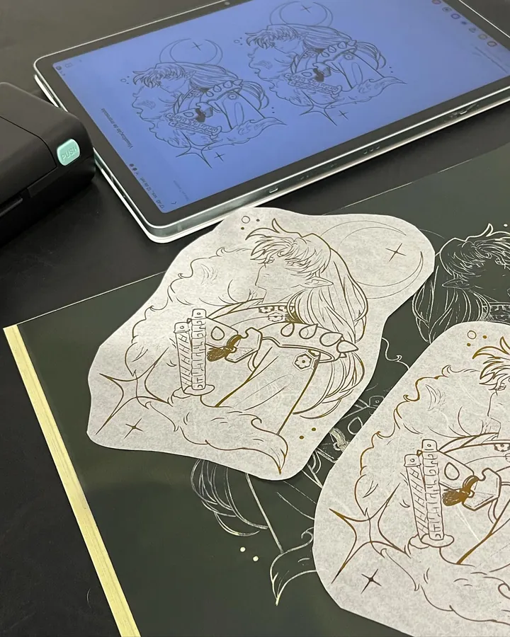
Arte
O projeto é desenhado no tablet a partir da sua ideia, do personagem e do lugar do corpo.
-
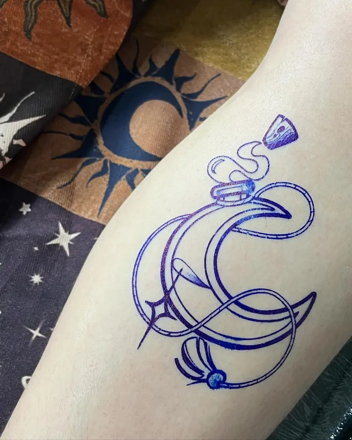
Decalque
O desenho vai para a pele em violeta. Dá para ajustar tamanho e posição antes da agulha.
-
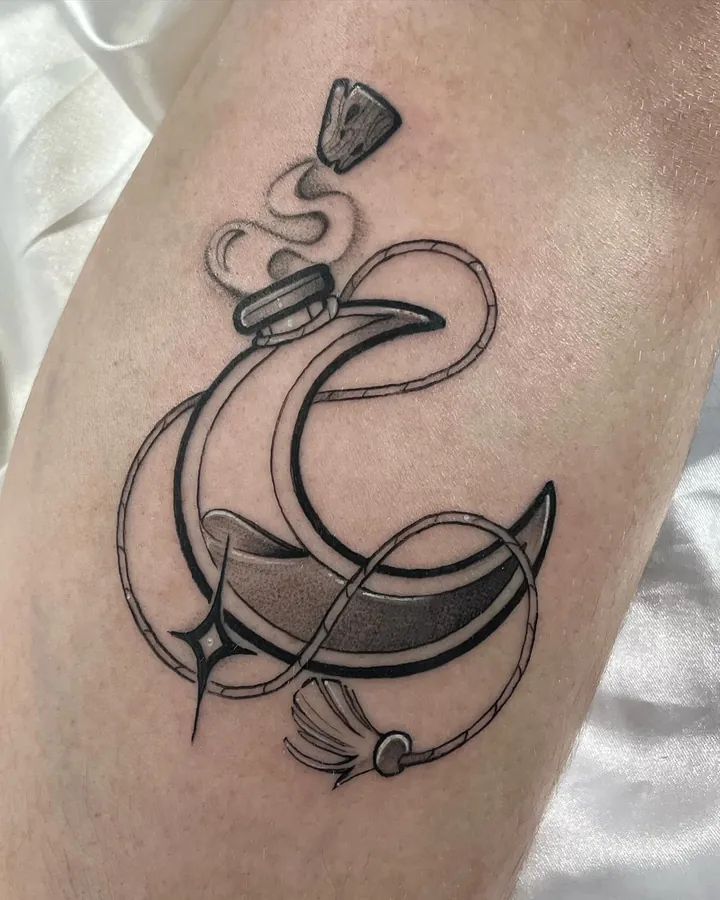
Tatuagem
Linha firme, sombra em preto e cinza e, quando o desenho pede, um detalhe em vermelho.
-
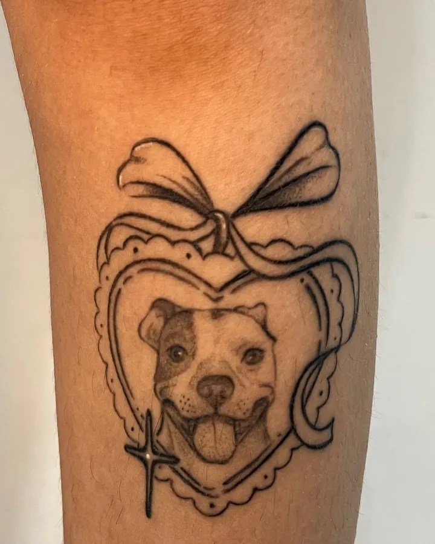
Cicatrizada
Depois de cicatrizar, o traço continua limpo. É o resultado que fica com você.
Desenhos disponíveis
Artes autorais prontas para tatuar. Cada uma é tatuada uma vez só: fechou, sai da lista. Se gostou de uma que já foi, ela cria uma versão nova para você.
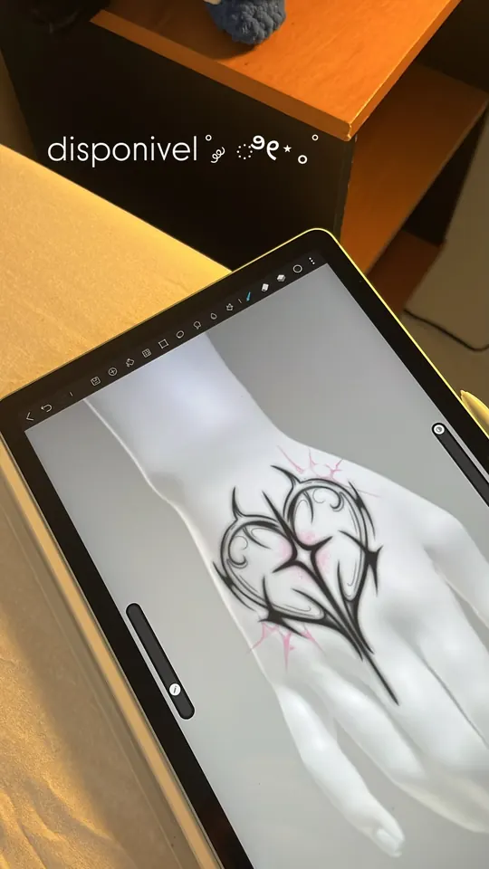
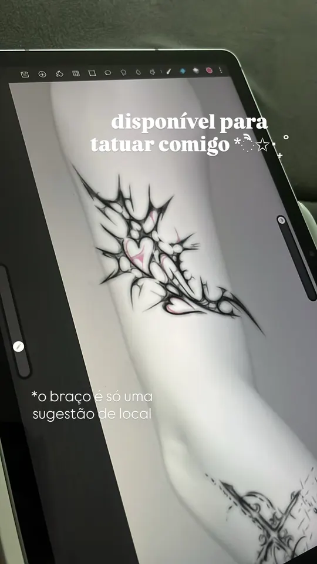
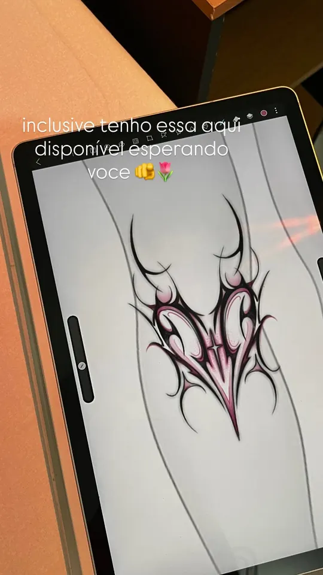
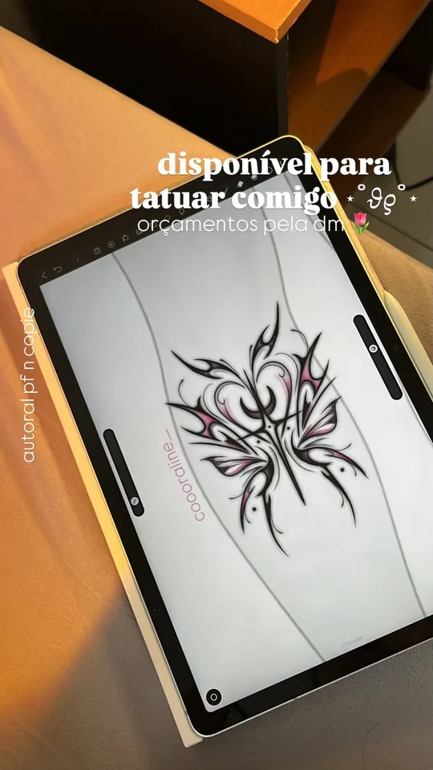
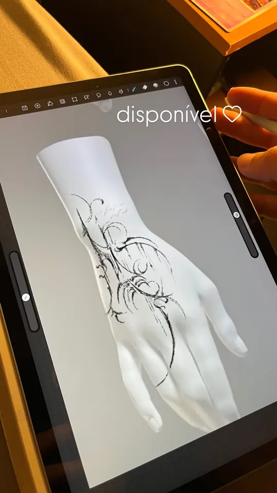
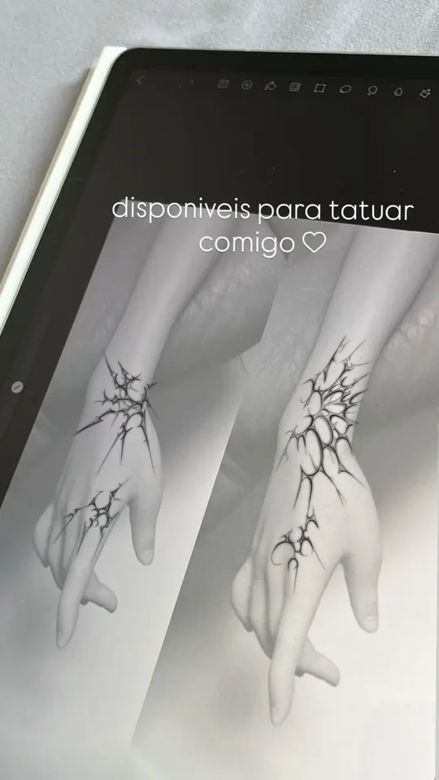
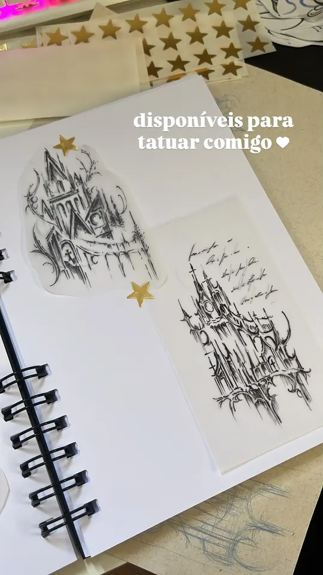
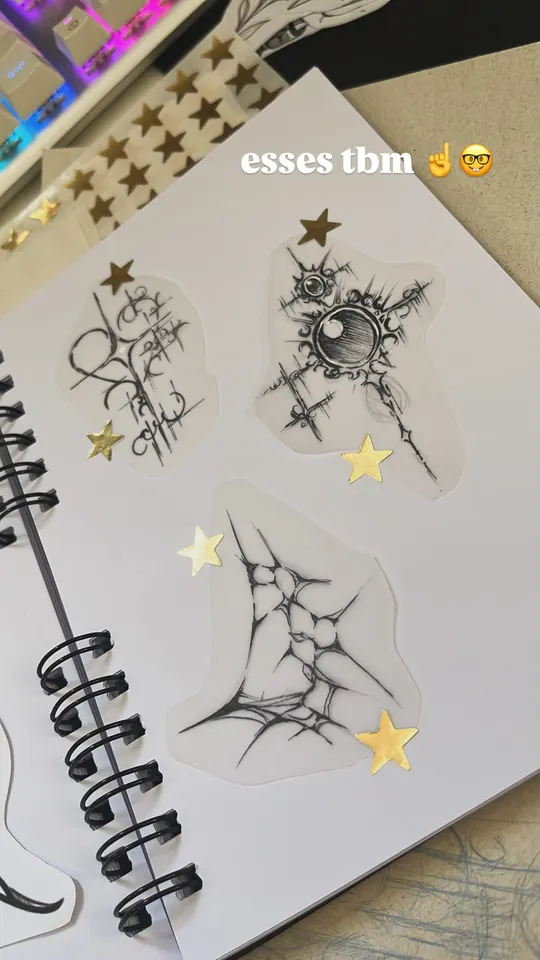
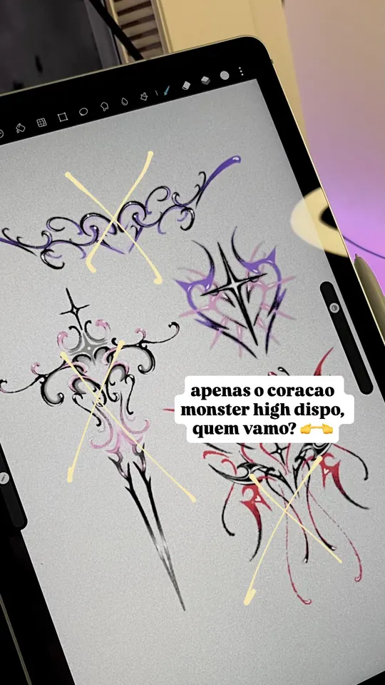
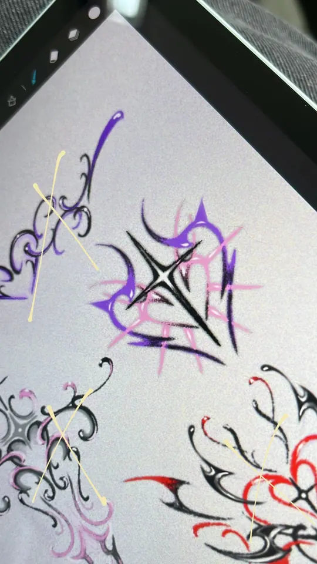
Valores de referência
- Flash até 8 cm
- a partir de R$ 180
- Até 10 cm
- a partir de R$ 300
- Até 12 cm
- a partir de R$ 320
- Painel de mangá até 12 cm
- 1 por R$ 350 · 2 por R$ 550
O valor final sai na DM, conforme tamanho, local e detalhes. Projetos maiores são orçados à parte.
Perguntar por um disponívelComo agendar
É simples, e tudo acontece pela DM do Instagram.
Chame na DM
Mande a arte que gostou ou a sua ideia, o tamanho aproximado e o lugar do corpo.
Sinal de R$ 50
Garante o seu horário e é abatido do valor total da tatuagem.
No dia da sessão
O restante é pago à vista ou parcelado no cartão, com a taxa da maquininha.
Desenho exclusivo
Os desenhos são tatuados uma vez só. A sua tattoo não vai aparecer igual em outra pessoa.
Quem tatua
Coraline desenha desde sempre e hoje tatua em São José dos Campos.
O trabalho dela junta duas coisas que ela ama: anime, mangá e games, e o cybertribal. Personagem em preto e cinza, contorno de espinhos e, às vezes, um toque de vermelho. Também faz flashes delicados, bichinhos e florais, quase sempre saídos das próprias folhas de desenho.
Cada projeto começa no tablet e só vai para a pele quando você aprovar o decalque.
Onde fica
Ink Vale Tattoo
Rua Serimbura, 326, sala 2Vila Ema, São José dos Campos, SP
- AtendimentoEstúdio privado, só com hora marcada
- HorárioSegunda a sábado, das 10h às 19h
- OrçamentosPela DM do Instagram
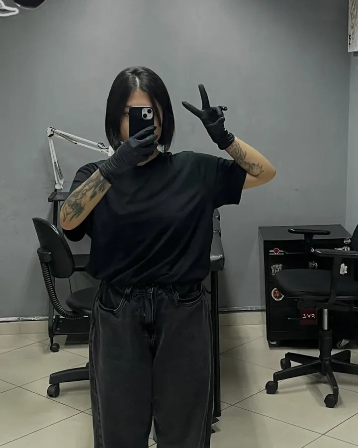
Dúvidas
Posso mandar referência de outro tatuador?
Pode mandar como inspiração. O desenho final é criado por ela, com a sua ideia, e não é cópia de outro trabalho.
Atende menor de idade?
Não. O atendimento é só para maiores de 18 anos, com documento com foto.
Faz reforma ou cobertura?
Faz, avaliando caso a caso. Mande uma foto da tattoo atual na DM.
Como cuido depois?
Os cuidados são passados no dia da sessão. Em média, a cicatrização leva de 15 a 30 dias.
E se eu precisar remarcar?
Avise com antecedência pela DM para remarcar sem perder o sinal.